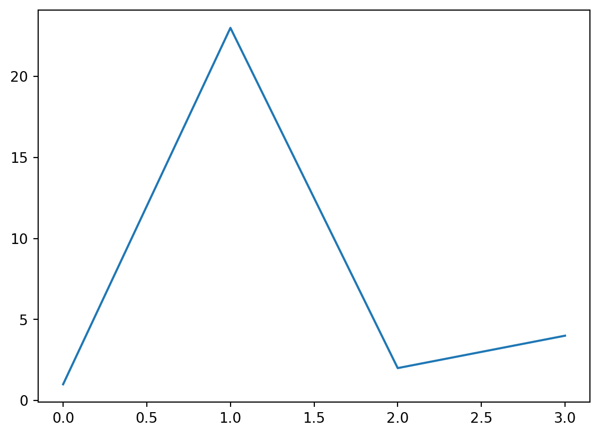

import matplotlib.pyplot as plt
plt.plot([1,23,2,4])
plt.show()

optionally add a subtitle
Guillaume Jacquemet ![]()
Joanna Pylvänäinen
Under your first header, include a brief introduction to your chapter.
Starting prompt for this chapter: Chapter 9 discusses the considerations (e.g., over/under-fitting, parameter choices) for training a new model and tools to help getting started (e.g. DL4MicEverywhere). It should include a primer on cloud-based computing tools such as Docker, Google Colab, etc. to highlight the potential for training models without bespoke hardware in house. This chapter should demonstrate a walk-through of training a model for segmentation, following the throughline of the book.
Use markdown heading level two for section headers. You can use standard markdown formatting, for example emphasize the end of this sentence.
This is a new paragraph with more text. Your paragraphs can cross reference other items, such as Figure 11.1. Use fig to reference figures, and eq to reference equations, such as Equation 11.1.
To make your sections cross reference-able throughout the book, include a section reference, as shown in the header for Section 11.4.
To cite a research article, add it to references.bib and then refer to the citation key. For example, reference1 refers to CellPose and reference2 refers to ZeroCostDL4Mic.
We are using the extension Quarto-glossary to create a glossary for this book. To add a definition, edit the glossary.yml file. To reference the glossary, enclose the word as in these examples: LLMs suffer from . It is important to understand the underlying to interpret your results. Clicking on the word will reveal its definition. The complete glossary for the book will be listed in the Glossary.
This is an example of including a python snippet that generates a figure
import matplotlib.pyplot as plt
plt.plot([1,23,2,4])
plt.show()In some cases, you may want to include a code-block that is not executed when the book is compiled. Use the eval: false option for this.
import matplotlib.pyplot as plt
plt.plot([1,23,2,4])
plt.show()Figures can also be generated that do not show the code by using the option for code-fold: true.
import numpy as np
import matplotlib.pyplot as plt
r = np.arange(0, 2, 0.01)
theta = 2 * np.pi * r
fig, ax = plt.subplots(
subplot_kw = {'projection': 'polar'}
)
ax.plot(theta, r)
ax.set_rticks([0.5, 1, 1.5, 2])
ax.grid(True)
plt.show()
Here is an example equation.
\[ s = \sqrt{\frac{1}{N-1} \sum_{i=1}^N (x_i - \overline{x})^2} \tag{9.1}\]
You can also embed figures from other notebooks in the repo as shown in the following embed example.
When embedding notebooks, please store the .ipynb file in the notebook directory. Include the chapter in the name of your file. For example, chapter4_example_u-net.ipynb. This is how we will handle chapter- or example-specific environments. We will host notebooks on Google Colab so that any required packages for the code–but not for rendering the book at large–will be installed there. That way, we will not need to handle a global environment across the book.
You can learn more about markdown options and additional Quarto features in the Quarto documentation. One example that you might find interesting is the option to include callouts in your text. These callouts can be used to highlight potential pitfalls or provide additional optional exercises that the reader might find helpful. Below are examples of the types of callouts available in Quarto.
Note that there are five types of callouts, including: note, tip, warning, caution, and important. They can default to open (like this example) or collapsed (example below).
These could be good for extra material or exercises.
There are caveats when applying these tools. Expand the code below to learn more.
r = np.arange(0, 2, 0.01)
theta = 2 * np.pi * rBe careful to avoid hallucinations.
This is key information.